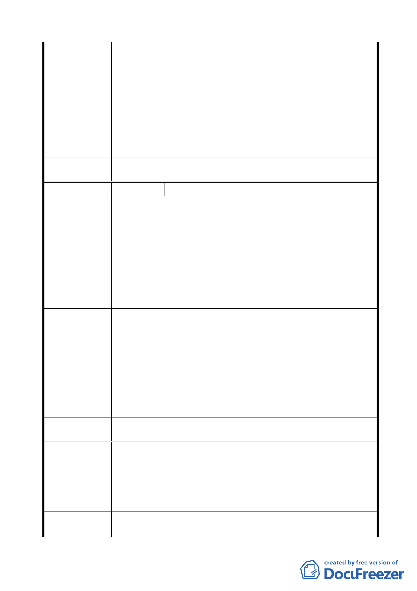

軸帶之中央樞紐位置，於此設置完善的大眾運輸轉乘設
施，提供良好的大眾運輸服務，不僅能改善周邊地區交通
環境，更能吸引遊客來此觀光，帶動周邊觀光與商業活動，
促進地區整體發展。
2. 目前捷運圓山站周邊雖有轉乘或接駁公車、計程車招呼站
之設置，但區位較為分散，未能提供舒適便捷的轉乘服務，
爰以大眾運輸導向觀點，提出本變更交通廣場用地案，規
劃設置大眾運輸轉乘設施，以達帶動觀光熱潮、促進地區
整體發展之目標。
一、 同編號 1 決議。
委 員 會 決 議 二、 依市府回應意見辦理。
編 號 3 陳情人 交通部臺灣鐵路管理局
本案變更案範圍內計有本局經管之臺北市大同區大龍段
264-8 地號等 8 筆(5 筆商業區用地，3 筆道路用地)土地，面
積 2328 平方公尺，市府為整頓該地區環境及景觀需要，依法
辦理都市計畫變更為交通廣場用地，並依法辦理土地有償撥
陳 情 理 由 用及開闢，惟查本案都市計畫書之事業及財務計畫備註：「本
計畫預定完成期限及工程費得由主管單位視年度實際財務狀
況酌予調整」，因未明訂辦理土地撥用及開闢期間，將影響本
局權益，故提起異議。
都市計畫書第 8 頁補述完成用地有償撥用及開闢期限，並增
列倘主辦機關(市府交通局)未依核准開闢計畫期程實施開發
建 議 辦 法 建設，應於超過開發時程 1 年內，依都市計畫法定程序將其
土地變更回復為原使用分區。以免造成土地變更後，市府辦
理撥用取得前，本局無法利用及管理該等土地。
本案都市計畫書之事業及財務計畫已表列預定完成期限為
市 府 回 應 意 見 100 年度，業充分表示開闢期程，爰無需補述土地撥用及開闢
期限。
一、 同編號 1 決議。
委 員 會 決 議 二、 依市府回應意見辦理。
編 號 4 陳情人 謝明芬
本人所居住之處剛好位於本案公告之計畫範圍內(地號：大龍
段一小段 265-6 號)，需配合政府之政策，但由於時間緊迫，
陳 情 理 由 且有關單位並未提出相關配套措施，致使居民無所適從，不
知將搬遷至何處？及搬遷費用之著落等…？
希望有關單位能派員幫住所處居民溝通協調，達成共識、共
建 議 辦 法 創雙贏。
-5-